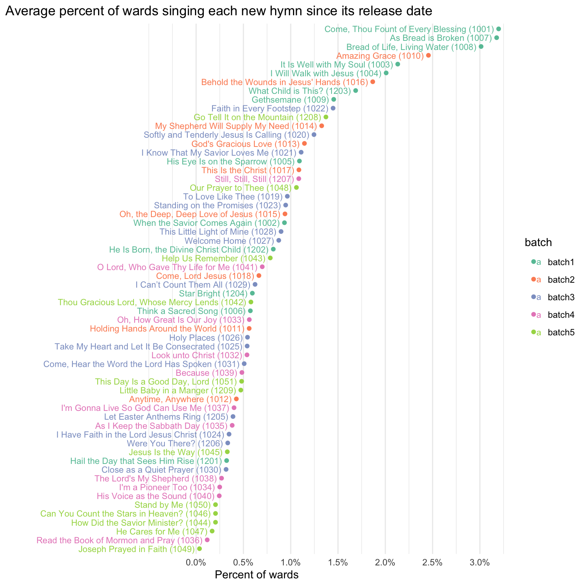

General Analysis of the New Hymns
general
frequency
new hymns
In previous posts, I have done an in-depth analysis of the first, second, third, fourth, and fifth batches of new hymns. This post is an analysis of all the new hymns generally.
In my overview page, I show which hymns have been the most popular since June 2024. But, pooling together all the data since then gives an unfair advantage to the earlier batches since they have been out longer and therefore have had more chances to be sung. So, I want to show the popularity of each hymn after controlling for how many weeks it has been available.
I think this plot says a lot, so let’s break it down. On a general level, we see that the most common hymns are sung by 2%–3% of wards every Sunday. That’s not a tremendous amount, about one out of every 40–50 wards for any one of those top six or so hymns. But that’s roughly the same as saying that, this Sunday, there’s something like a 20%–30% chance that at least one ward in your stake will sing
1 There are usually 52 Sundays in a year, but we have two set aside for General Conference and two set aside for Stake Conference, so that leaves 48 sacrament meetings per year. 1 divided by 48 is about 0.0208. So if a hymn is sung 2.08% of the time, that’s about once per year.
On the other end of the plot, we have a list of the least common hymns. These are ones that relatively few wards have ever sung, at least as congregational hymns. Some of the lowest on this list are sitting around 0.2% of wards. That means that, for any of these bottom 10 hymns, there’s only about a 1–3% chance of a ward singing it next Sunday, even for larger stakes. Your ward might sing it only once every 10 years! (Of course, these are new hymns, so it’s silly to make speculations like that.) That makes these about as popular as
One trend that I’m seeing in this plot is that many of the hymns in the earlier batches are closer to the top and many of the hymns in the later batches are close to the bottom.2 Here’s a plot showing that relationship. I’ve ignored the holiday hymns since they don’t quite fit the pattern.
2 The correlation between hymn number and frequency is statistically significant according to a Kendall’s rank correlation test: \(\tau = -0.5638\), \(z = -5.8325\), \(p < 0.001\).